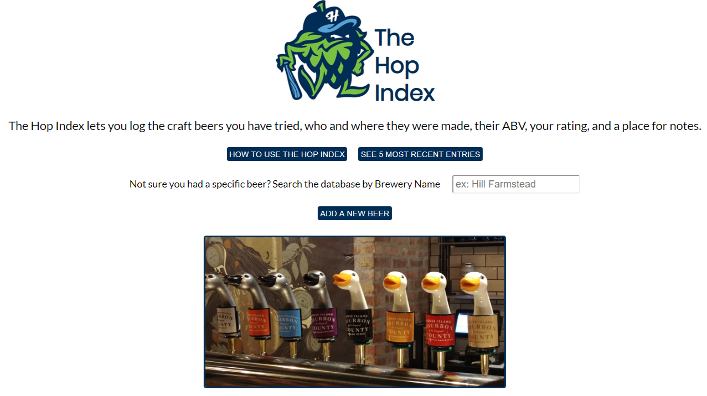
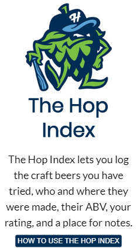
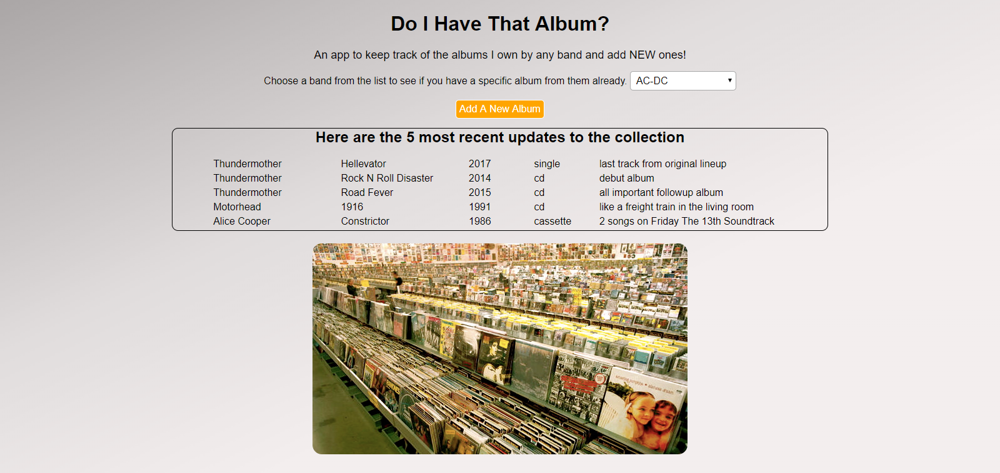
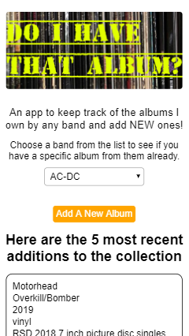
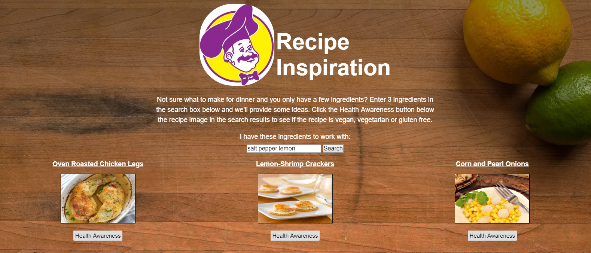
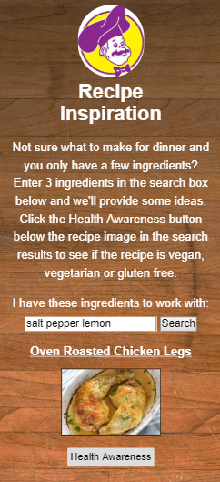
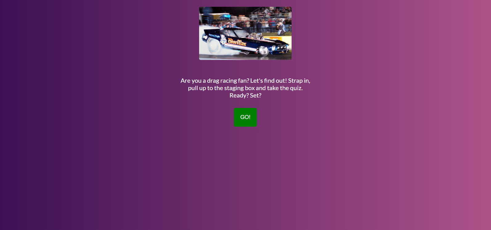
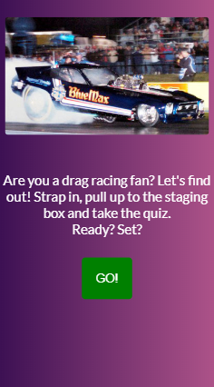

You CAN teach the old
developer new tricks!
I am a seasoned Web Developer with experience on both the front and back end who is currently based in the Fairfield County Connecticut area. My interests include music, concerts, sports, technology, craft beer and traveling the country.
The Hop Index
 With the amazing amount of craft beers on the market it's tough to keep track of all of the ones I've tried. The Hop Index allows me to do just that.
- Front End: HTML5, CSS3, JavaScript, Enzyme, React, Redux
- Back End: Chai, Express.js, Mocha, MongoDB, Mongoose, Node.js
- DB: mLab
- Hosting: Heroku
- CI / Build Server: Travis CI
Do I Have That Album?
 This app provides an easy way to log and keep track of albums in my music collection as not all of my music is digitized and or on my phone.
- Front End: HTML5, CSS3, jQuery
- Back End: Chai, Express.js, Mocha, MongoDB, Mongoose, Node.js
- DB: mLab
- Hosting: Heroku
- CI / Build Server: Travis CI
Recipe Inspiration
 Not sure what to make for dinner? Check out my Recipe Inspiration app that works with the Spoonacular API. Search for any 3 ingredients and the app will return some recipe ideas with links to the recipes and photos of each.
- Front End: HTML, CSS, JavaScript, jQuery
NHRA Quiz App
 The NHRA Quiz App is a multiple-choice app to show your knowledge of the NHRA.
- Front End: HTML, CSS, jQuery
I was the kid growing up who always took apart his toys to see how they worked. This fascination continued after I received my first computer as a gift in 1995. From there I began creating the most basic of web pages and haven't looked back since. In my professional experience I've spent many years on the front end working with html, css, and javascript and all the nuances of browser and email client support. I actually started out on the backend writing SQL reports on a Unix based database. Most recently I worked for an event marketplace that supported a handful of internal and external apps that were written in several languages including Classic ASP, VB.Net, C#, and React. At the end of 2018 I decided it was time to head back to school and strengthen my skillset where I graduated from Thinkful's Full Stack Flex bootcamp with an emphasis on Node and React. I am currently available and looking for new and exciting employment opportunities. Feel free to contact me through the links below.